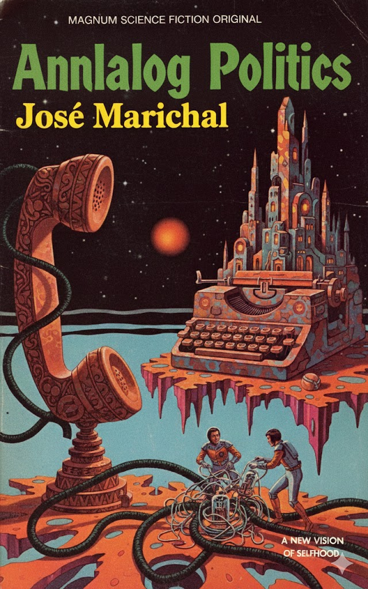
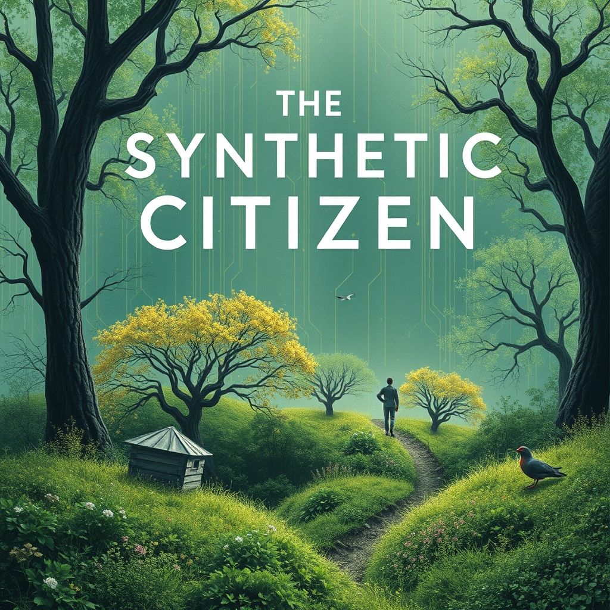
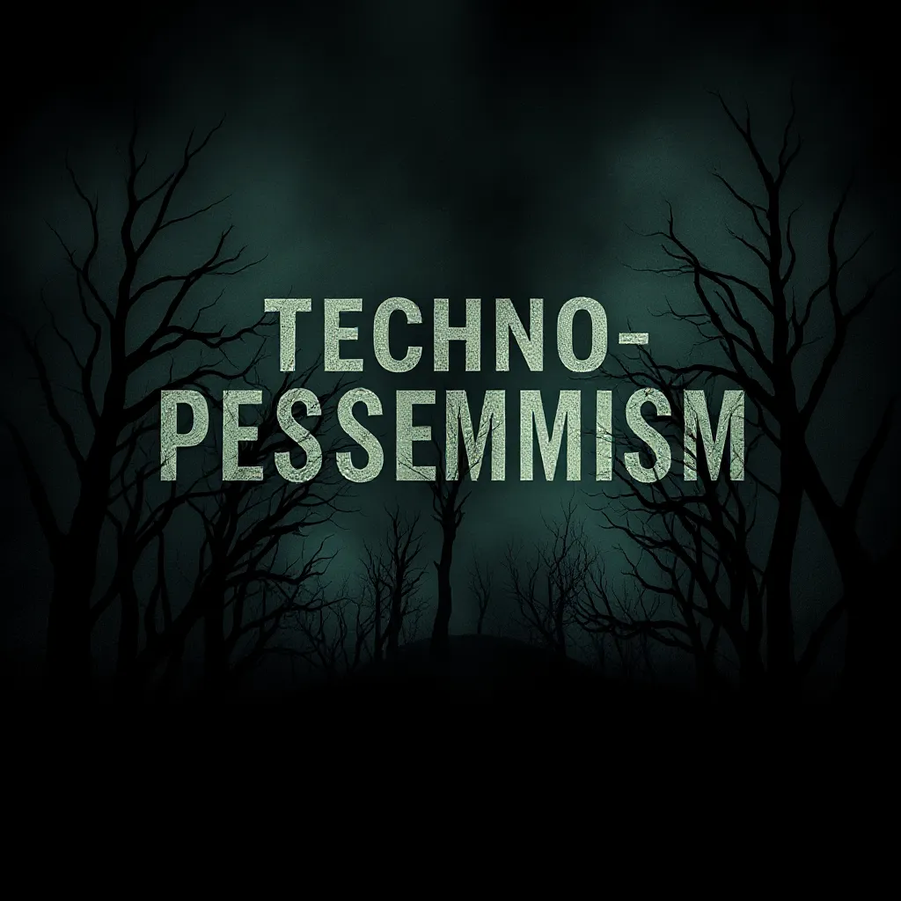

Participatory AI Lab (PAI-L)
A Hub for Undergraduate AI Innovation at California Lutheran University
The Participatory AI Lab (PAI-L) is a high-velocity research hub where undergraduates learn how to use Agentic AI tools to increase participatory civic culture and deepen democratic engagement. We are built on the premise that something fundamental is changing in how we generate knowledge. By drastically accelerating our research capabilities, we empower our student fellows to tackle the specific opportunities and challenges these technologies pose for governance. The rate of progress is astonishing. Today, armed with a laptop and an API key, an undergraduate can prototype ambitious public-impact projects in a matter of weeks that would have previously required an entire developer team.
Our fellows leverage these coding agents to complete rigorous research: from analyzing AI bias in voter recommendations and rigorously testing statistical "p-hacking," to building automated pipelines for legislative drafting. Crucially, we focus on using these tools to actively connect people and complicate—rather than simply optimize—our understanding of civic life. Whether it’s deploying interactive environments like the Policy Prototyper or using AI-powered deliberation in the Global Policy Analyst, our ultimate goal is to generate the dynamic, living infrastructure necessary to actively shape a more inclusive future.
PAI-L at CLU is convened by Dr. Jose Marichal. Students interested in joining the lab can contact him at marichal@callutheran.edu.



Analog Politics
Can going analog become a social movement?

Unaccountable AI
Should we let AI go rogue?

Techno-Pessimism
Are we better off not expecting too much from AI?
Pluralist AI
Can AI make democracy more, not less expansive